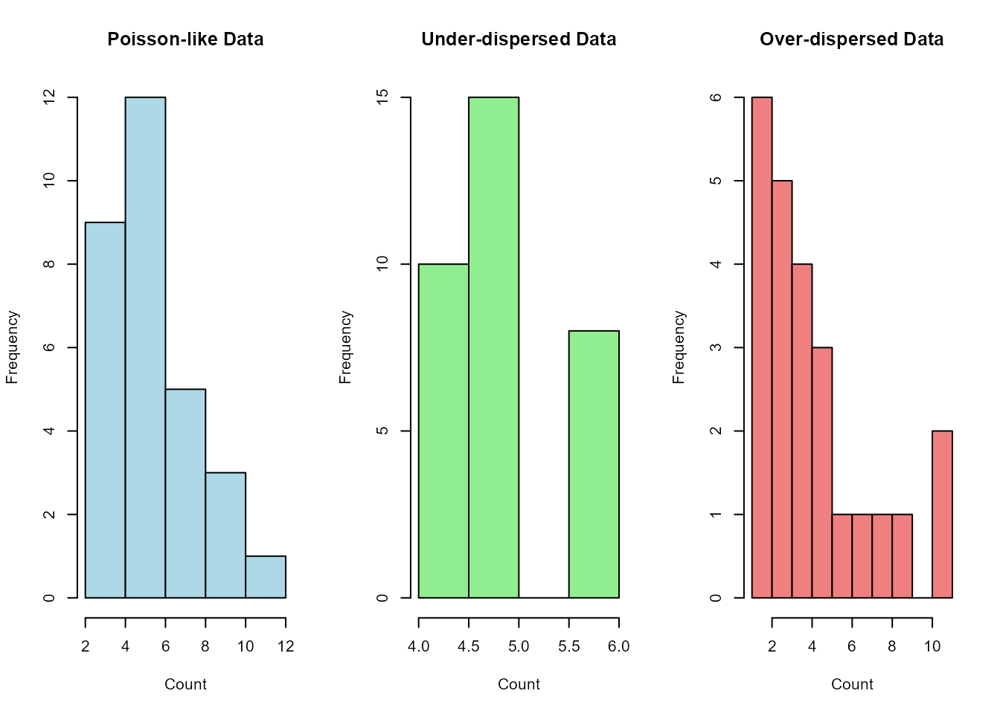

Introduction to GoodnessOfFitmCMP
Source:vignettes/GoodnessOfFitmCMP-introduction.Rmd
GoodnessOfFitmCMP-introduction.RmdIntroduction
The Conway-Maxwell Poisson (COM-Poisson) distribution is a flexible
generalization of the Poisson distribution that can model
under-dispersed, equi-dispersed, and over-dispersed count data. This
vignette demonstrates how to use the GoodnessOfFitmCMP
package to test whether your count data follows a mean-parametrized
COM-Poisson (mCMP) distribution.
The COM-Poisson Distribution
The mCMP distribution has probability mass function:
$$P(X = x) = {\left({\mu + \frac{{e^\phi - 1}}{{2e^\phi}}}\right)^{xe^\phi}}\frac{{(x!)^{-e^\phi}}}{Z(\mu ,\phi)}, \quad x = 0,1,2,\ldots, \begin{array}{*{20}{c}} {0 < \mu < +\infty,} \\ {-\infty < \phi < +\infty,} \end{array}$$
where is the normalizing constant. The mean-parametrized version uses parameters (mean) and (dispersion). ## Basic Example
# Example count data
data <- c(2, 3, 1, 4, 2, 3, 2, 1, 3, 2, 4, 1, 3, 2, 5, 1, 2, 3, 4, 2)
# Perform goodness-of-fit test (using small B for example speed)
result <- goodness_of_fit_mCMP(data, B = 100, verbose = FALSE)
# Print result
print(result)
#> $estimated_mu
#> [1] 2.543234
#>
#> $estimated_phi
#> [1] 0.7916077
#>
#> $p_value
#> CV AD chi_sq CV_M AD_M PD
#> 0.80 0.95 0.88 0.76 0.73 0.60
#>
#> $obs_stats
#> CV AD chi_sq CV_M AD_M PD
#> 0.01014678 0.06138230 0.76667691 0.02574311 0.27330297 0.02165909Understanding the Output
# Check the structure of the result
str(result)
#> List of 4
#> $ estimated_mu : num 2.54
#> $ estimated_phi: num 0.792
#> $ p_value : Named num [1:6] 0.8 0.95 0.88 0.76 0.73 0.6
#> ..- attr(*, "names")= chr [1:6] "CV" "AD" "chi_sq" "CV_M" ...
#> $ obs_stats : Named num [1:6] 0.0101 0.0614 0.7667 0.0257 0.2733 ...
#> ..- attr(*, "names")= chr [1:6] "CV" "AD" "chi_sq" "CV_M" ...
# Print class and names if it's a list
if (is.list(result)) {
cat("Result components:", paste(names(result), collapse = ", "), "\n")
}
#> Result components: estimated_mu, estimated_phi, p_value, obs_statsMultiple Examples
# Example 1: Equi-dispersed data (Poisson-like)
set.seed(123)
poisson_data <- rpois(30, lambda = 5)
result1 <- goodness_of_fit_mCMP(poisson_data, B = 100, verbose = FALSE)
# Example 2: Under-dispersed data
underdispersed_data <- c(rep(4, 10), rep(5, 15), rep(6, 8))
result2 <- goodness_of_fit_mCMP(underdispersed_data, B = 100, verbose = FALSE)
# Example 3: Over-dispersed data
overdispersed_data <- c(rep(1, 4), rep(2, 2), rep(3, 5), rep(4, 4), rep(5, 3),6,7,8,9,11,11)
result3 <- goodness_of_fit_mCMP(overdispersed_data, B = 100, verbose = FALSE)
# Compare results
cat("Poisson-like data result:\n")
#> Poisson-like data result:
print(result1)
#> $estimated_mu
#> [1] 5.67535
#>
#> $estimated_phi
#> [1] 0.01159577
#>
#> $p_value
#> CV AD chi_sq CV_M AD_M PD
#> 0.63 0.70 0.60 0.75 0.86 0.53
#>
#> $obs_stats
#> CV AD chi_sq CV_M AD_M PD
#> 0.03375683 0.21556334 8.12202180 0.03759512 0.27208816 0.02466640
cat("\nUnder-dispersed data result:\n")
#>
#> Under-dispersed data result:
print(result2)
#> $estimated_mu
#> [1] 5.415733
#>
#> $estimated_phi
#> [1] 3.652256
#>
#> $p_value
#> CV AD chi_sq CV_M AD_M PD
#> 0.97 0.26 0.02 0.69 0.67 0.98
#>
#> $obs_stats
#> CV AD chi_sq CV_M AD_M PD
#> 2.403702e-01 4.063318e+00 2.784106e+03 2.112583e+00 9.034292e+00 9.182748e-02
cat("\nOver-dispersed data result:\n")
#>
#> Over-dispersed data result:
print(result3)
#> $estimated_mu
#> [1] 4.236294
#>
#> $estimated_phi
#> [1] -0.8004528
#>
#> $p_value
#> CV AD chi_sq CV_M AD_M PD
#> 0.62 0.47 0.31 0.49 0.37 0.45
#>
#> $obs_stats
#> CV AD chi_sq CV_M AD_M PD
#> 0.03326826 0.30403726 14.53617530 0.05690041 0.54935554 0.02944942Basic Visualization
# Simple histogram for the data
par(mfrow = c(1, 3))
hist(poisson_data, main = "Poisson-like Data",
xlab = "Count", ylab = "Frequency", col = "lightblue", breaks = 6)
hist(underdispersed_data, main = "Under-dispersed Data",
xlab = "Count", ylab = "Frequency", col = "lightgreen", breaks = 6)
hist(overdispersed_data, main = "Over-dispersed Data",
xlab = "Count", ylab = "Frequency", col = "lightcoral", breaks = 8)
Parameter Interpretation
The COM-Poisson distribution has two key parameters:
- μ (mu): Mean parameter
-
φ (phi): Dispersion parameter
- φ = 1: Equi-dispersed (similar to Poisson)
- φ > 1: Under-dispersed (variance < mean)
- φ < 1: Over-dispersed (variance > mean)
Test Statistics
The package provides several test statistics:
- Modified Cramér-von Mises (CV_M): Based on Stein’s characterization
-
Modified Anderson-Darling (AD_M): Based on Stein’s
characterization
- Probability Distance (PD): Based on Stein’s characterization
- Standard tests: Traditional Cramér-von Mises (CV), Anderson-Darling (AD), Chi-square